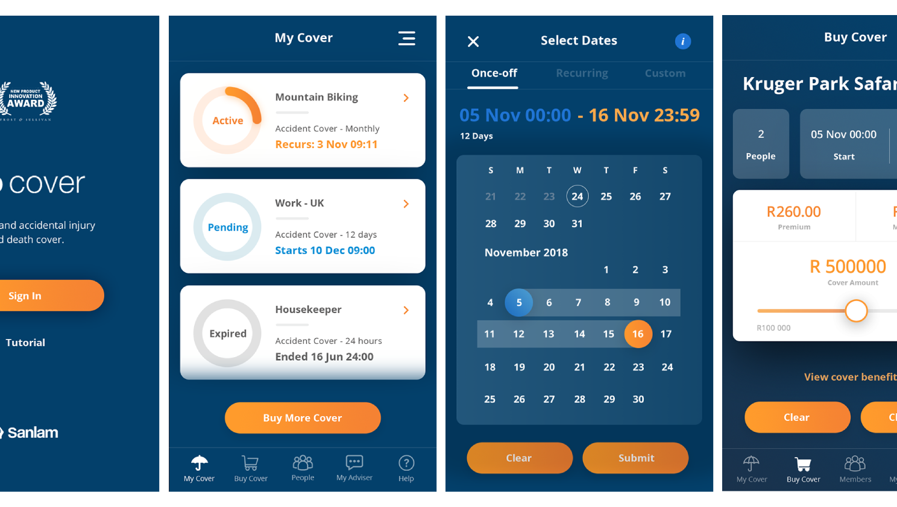

Designing Contextual Insurance for Mobile-First Customers

Go Cover is a mobile-first insurance platform designed to simplify the purchase and management of accidental injury and death cover. Built around a contextual user journey, the platform enables customers to understand, purchase and manage insurance products through an experience that feels approachable and easy, rather than intimidating.
As part of the UX/UI team, working with Liquorice, and the Marketing team at Sanlam - I contributed to refining the customer experience, improving usability across key journeys, and ensuring the interface aligned with Sanlam's broader digital ecosystem - and converting provided designs into functional implementations.
The Challenge
Traditional insurance products often overwhelm customers with industry terminology, lengthy forms and complex decision-making. The challenge was to transform these processes into an experience that felt simple, trustworthy and easy to complete on a mobile device.
The platform also needed to support evolving business requirements while maintaining consistency across multiple releases, ensuring that new functionality could be introduced without increasing user friction.
My Role
- User journeys
- Wireframes
- High-fidelity UI
- Interaction design implementation
- Error state refinement
- Developer collaboration
Process
The design process focused on reducing complexity and guiding users through critical insurance decisions with confidence.
Key activities included:
- Reviewing existing customer journeys
- Simplifying information architecture
- Designing responsive mobile-first interfaces
- Improving form completion and validation
- Creating reusable interface components
- Iterating designs through stakeholder feedback
Every design decision aimed to remove unnecessary cognitive load while maintaining transparency around insurance products and policy information.

Design Approach
The interface was intentionally clean and focused, using progressive disclosure to reveal information only when users needed it. Complex insurance concepts were broken into manageable steps, allowing customers to remain confident throughout the purchasing journey.
Special attention was given to hierarchy, accessibility and readability, ensuring important information was easy to understand while supporting quick decision-making on smaller screens.
Consistency across components also helped reduce learning time and strengthened the overall product experience.
Outcome
The resulting platform delivered a streamlined digital insurance experience that balanced business requirements with customer needs. By simplifying key journeys and improving usability, the platform helped create a more approachable insurance product for mobile users.
The project also strengthened the underlying design patterns and reusable UI components, providing a scalable foundation for future platform enhancements and additional product releases.
Skills & Tools
UX Design • User Journey Mapping • Information Architecture • Wireframing • UI Design • Responsive Design • Design Systems • Component Libraries • Prototyping • Design QA • Cross-functional Collaboration • Figma